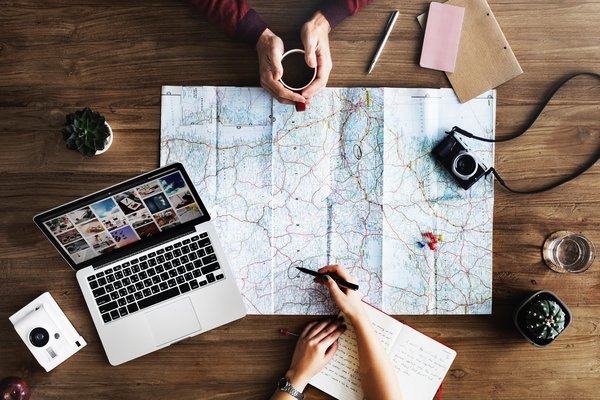

Home
Dacă și tu vrei să vezi lumea, să descoperi secrete nebănuite și să te distrezi la maxim, aici este locul de unde să începi. Ti-am pregătit câteva dintre aventurile mele de unde te poți inspira, dar si multe oferte de vacanțe. In galeria foto vei desoperi poze facute chiar de mine cu unele dintre locurile vizitatea in decursul anilor. Explorează acest blog !
Viziteaza site-ul nostru si revino la acest quiz pentru ati testa atentia !
Testul incepe cand dai start.
JOC MAGIC
Vrei sa afli unde vei calatori vara aceasta? Lasa-te purtat de val si intra in jocul nostru...
Apasa butonul START pentru a descoperi ambele raspunsuri. Daca vrei sa le vezi separat:
- Da click pe '?' pentru a vedea unde pleci in vacanta
- Apasa tasta ENTER pentru a vedea cat te costa
START
ENTER
Dar cu ce te imbraci ? Trebuie sa fii cool in aceasta excursie, asa ca afla culorile potrivite pentru tine apasand cadranele de mai jos.
Ca un joc sa fie interesant este nevoie de cateva reguli. Daca vrei sa afli mai multe dintr-un singur click, apasa un cadran mai mic, in schimb, daca nu vrei sa aplici regulile, doar bifeaza casuta de mai jos si poti vedea surpriza fiecarui cadran independent.
Nu aplic reguli:Vrei sa impartasesti ganduri si sentimente cu alti pasionati de calatorii? Intra pe forum-ul nostru. CATRE FORUM !
CASTIGA O EXCURSIE ACUM !